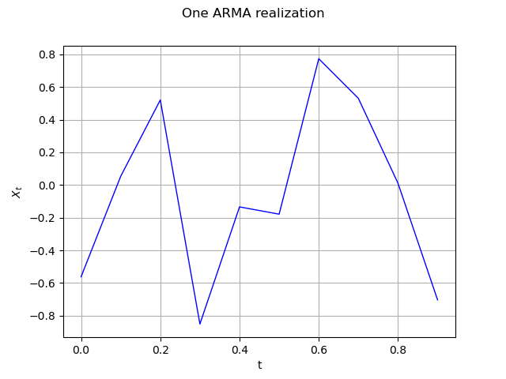
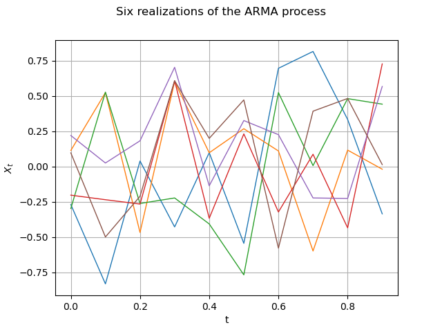
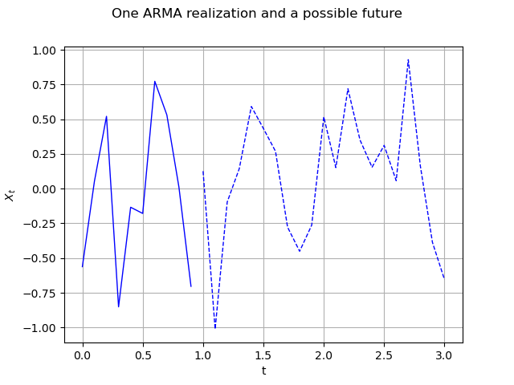
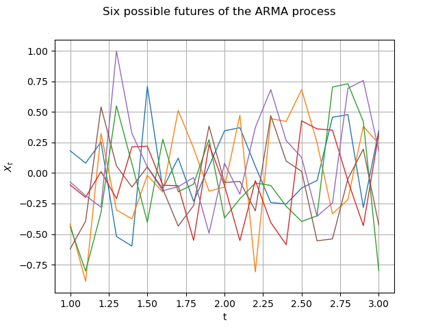

Note
Go to the end to download the full example code
Create and manipulate an ARMA process¶
In this example we first create an ARMA process and then manipulate it.
import openturns as ot
import openturns.viewer as viewer
from matplotlib import pylab as plt
ot.Log.Show(ot.Log.NONE)
Create an ARMA process¶
In this example we are going to build an ARMA process defined by its linear recurrence coefficients.
The creation of an ARMA model requires the data of the AR and MA coefficients which are:
a list of scalars in the unidmensional case :
 for the AR-coefficients and
for the AR-coefficients and
 for the MA-coefficients
for the MA-coefficientsa list of square matrix
 for the
AR-coefficients and
for the
AR-coefficients and
 for the
MA-coefficients
for the
MA-coefficients
It also requires the definition of a white noise
 that contains the same time grid as the
one of the process.
The current state of an ARMA model is characterized by its last
that contains the same time grid as the
one of the process.
The current state of an ARMA model is characterized by its last
 values and the last
values and the last  values of its white noise. It
is possible to get that state thanks to the methods getState.
It is possible to create an ARMA with a specific current state. That
specific current state is taken into account to generate possible
futurs but not to generate realizations (in order to respect the
stationarity property of the model).
At the creation step, we check whether the process
values of its white noise. It
is possible to get that state thanks to the methods getState.
It is possible to create an ARMA with a specific current state. That
specific current state is taken into account to generate possible
futurs but not to generate realizations (in order to respect the
stationarity property of the model).
At the creation step, we check whether the process
 is stationnary.
When the process is not stationary, the user is warned by a message.
is stationnary.
When the process is not stationary, the user is warned by a message.
We build the 1D ARMA process defined by :
![X_{0,t} + 0.4 X_{0,t-1} + 0.3 X_{0,t-2} + 0.2 X_{0,t-3} + 0.1 X_{0,t-4} = E_{0,t} + 0.4 E_{0,t-1} + 0.3 E_{0,t-2}]()
where the white noise  is defined by
is defined by ![E_t \approx \mathrm{Triangular}(a = -1, m = 0, b = 1)]() .
.
The definition of the recurrence coefficients AR, MA (4,2) is simple :
myARCoef = ot.ARMACoefficients([0.4, 0.3, 0.2, 0.1])
myMACoef = ot.ARMACoefficients([0.4, 0.3])
We build a regular time discretization of the interval [0,1] with 10 time steps. We also set up the white noise distribution of the recurrence relation :
myTimeGrid = ot.RegularGrid(0.0, 0.1, 10)
myWhiteNoise = ot.WhiteNoise(ot.Triangular(-1.0, 0.0, 1.0), myTimeGrid)
We are now ready to create the ARMA-process :
process = ot.ARMA(myARCoef, myMACoef, myWhiteNoise)
print(process)
ARMA(X_{0,t} + 0.4 X_{0,t-1} + 0.3 X_{0,t-2} + 0.2 X_{0,t-3} + 0.1 X_{0,t-4} = E_{0,t} + 0.4 E_{0,t-1} + 0.3 E_{0,t-2}, E_t ~ Triangular(a = -1, m = 0, b = 1))
ARMA process manipulation¶
In this paragraph we shall expose some of the services exposed by an object, namely :
its AR and MA coefficients thanks to the methods getARCoefficients, getMACoefficients,
its white noise thanks to the method getWhiteNoise, that contains the time grid of the process,
its current state, that is its last
values and the last
values of its white noise, thanks to the method getState,a realization thanks to the method getRealization or a sample of realizations thanks to the method getSample,
a possible future of the model, which is a possible prolongation of the current state on the next
 instants, thanks to
the method getFuture.
instants, thanks to
the method getFuture. possible futures of the model, which correspond to
possible prolongations of the current state on the next
instants, thanks to the method
getFuture (, ).
possible futures of the model, which correspond to
possible prolongations of the current state on the next
instants, thanks to the method
getFuture (, ).
First we get the coefficients AR and MA of the recurrence :
print("AR coeff = ", process.getARCoefficients())
print("MA coeff = ", process.getMACoefficients())
AR coeff = shift = 0
[[ 0.4 ]]
shift = 1
[[ 0.3 ]]
shift = 2
[[ 0.2 ]]
shift = 3
[[ 0.1 ]]
MA coeff = shift = 0
[[ 0.4 ]]
shift = 1
[[ 0.3 ]]
We check that the white noise is the one we have previously defined :
myWhiteNoise = process.getWhiteNoise()
print(myWhiteNoise)
WhiteNoise(Triangular(a = -1, m = 0, b = 1))
We generate a possible time series realization :
ts = process.getRealization()
ts.setName("ARMA realization")
We draw this time series by specifying the wanted marginal index (only 0 is available here).
graph0 = ts.drawMarginal(0)
graph0.setTitle("One ARMA realization")
graph0.setXTitle("t")
graph0.setYTitle(r"$X_t$")
view = viewer.View(graph0)

Generate a k time series k = 5 myProcessSample = process.getSample(k)
# Then get the current state of the ARMA
# armaState = process.getState()
# print("armaState = ")
# print(armaState)
We draw a sample of size 6 : it is six different time series.
size = 6
sample = process.getSample(size)
graph = sample.drawMarginal(0)
graph.setTitle("Six realizations of the ARMA process")
graph.setXTitle("t")
graph.setYTitle(r"$X_t$")
view = viewer.View(graph)
# plt.show()
# We can obtain the current state of the ARMA process :
armaState = process.getState()
print("ARMA state : ")
print(armaState)

ARMA state :
X(t-4) = class=Point name=Unnamed dimension=1 values=[-0.579445]
X(t-3) = class=Point name=Unnamed dimension=1 values=[0.391824]
X(t-2) = class=Point name=Unnamed dimension=1 values=[0.481961]
X(t-1) = class=Point name=Unnamed dimension=1 values=[0.0131063]
epsilon(t-2) = class=Point name=Unnamed dimension=1 values=[0.53092]
epsilon(t-1) = class=Point name=Unnamed dimension=1 values=[-0.0920367]
Note that if we use the process in the meantime and ask for the current state again, it will be different.
ts = process.getRealization()
armaState = process.getState()
print("ARMA state : ")
print(armaState)
# From the aforementioned `armaState`, we can get the last values of :math:`X_t` and the last values
# of the white noise :math:`E_t`.
myLastValues = armaState.getX()
print(myLastValues)
myLastEpsilonValues = armaState.getEpsilon()
print(myLastEpsilonValues)
ARMA state :
X(t-4) = class=Point name=Unnamed dimension=1 values=[0.0635381]
X(t-3) = class=Point name=Unnamed dimension=1 values=[-0.594203]
X(t-2) = class=Point name=Unnamed dimension=1 values=[0.740754]
X(t-1) = class=Point name=Unnamed dimension=1 values=[-0.178577]
epsilon(t-2) = class=Point name=Unnamed dimension=1 values=[0.662273]
epsilon(t-1) = class=Point name=Unnamed dimension=1 values=[-0.143989]
0 : [ 0.0635381 ]
1 : [ -0.594203 ]
2 : [ 0.740754 ]
3 : [ -0.178577 ]
0 : [ 0.662273 ]
1 : [ -0.143989 ]
We have access to the number of iterations before getting a stationary state with
Ntherm = process.getNThermalization()
print("ThermalValue : %d" % Ntherm)
ThermalValue : 75
This may be important to evaluate it with another precision epsilon :
epsilon = 1e-8
newThermalValue = process.computeNThermalization(epsilon)
print("newThermalValue : %d" % newThermalValue)
process.setNThermalization(newThermalValue)
newThermalValue : 38
An important feature of an ARMA process is the future prediction from its current state over the next# Nit instants, say Nit=20.
Nit = 21
First we specify a current state armaState and build the corresponding ARMA process arma :
arma = ot.ARMA(myARCoef, myMACoef, myWhiteNoise, armaState)
# Then, we generate a possible future. The last instant was :math:`t=0.9` so the future starts at
# :math:`t=1.0`. We represent the ARMA process with a solid line and its possible future as a dashed
# curve.
future = arma.getFuture(Nit)
graph = future.drawMarginal(0)
curve = graph.getDrawable(0)
curve.setLineStyle("dashed")
graph0.add(curve)
graph0.setTitle("One ARMA realization and a possible future")
view = viewer.View(graph0)

It is of course possible to generate N different possible futures over the Nit next instants.
N = 6
possibleFuture_N = arma.getFuture(Nit, N)
possibleFuture_N.setName("Possible futures")
Here we only show the future.
graph = possibleFuture_N.drawMarginal(0)
graph.setTitle("Six possible futures of the ARMA process")
graph.setXTitle("t")
graph.setYTitle(r"$X_t$")
view = viewer.View(graph)

Display all figures
plt.show()